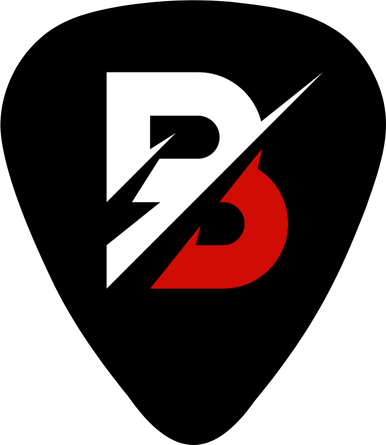

Arrastra SVG/PNG aquí
o haz clic para seleccionar
Crea compases manualmente para ejercicios de diapositivas o sin backing.
Para múltiples acordes: créalos uno a uno y edita los acordes directamente en el editor.
Exporta desde Band-in-a-Box: File → Save as → MusicXML
SVGs de Neck Diagrams: 1001×394px, sin título, margen mínimo.
Ejercicio sin acordes: carga el m4a del ritmo (en Audio & XML), pon el BPM a mano (en Sincronización) y el resto se calcula. El nº de compases se deduce de la duración del audio; puedes corregirlo.
Tempo progresivo (opcional): si además cargas el MusicXML del tema (en Audio & XML) con al menos un acorde de referencia — para marcar dónde acaba la intro, aunque el ritmo no use ese acorde para nada más — y ese XML trae cambios de tempo (<sound tempo> por compás, como exporta BiaB), el vídeo los sigue automáticamente: BPM, nº de compases y duración se leen del XML en vez de calcularse a BPM fijo. El aviso "Del XML: X → Y BPM" en Sincronización confirma que se ha detectado.
scripts/render-rhythm-video.js: mete este archivo junto a los .m4a del mismo estilo a distintos tempos — el BPM de cada vídeo se lee del nombre de archivo, así que aquí NO hace falta el BPM ni el nº de compases (se recalculan por audio).
Ritmo extraído de un tema real: no hay compases ni acordes que sincronizar, así que el vídeo es una pantalla informativa con título, autor y BPM (a mano, solo texto) sobre un fondo animado abstracto que sale distinto en cada vídeo que generes.
scripts/render-real-rhythm-video.js --dir: mete este archivo junto al audio del tema en una carpeta — título/autor/BPM/tonalidad/estilo se leen de ahí, sin tener que repetirlos a mano.
Graba automáticamente la visualización (mástil + audio) tal como se ve al darle a Play, sin necesidad de usar un programa externo de captura de pantalla. Al pulsar "Generar vídeo" el navegador te pedirá compartir esta pestaña (acepta la que dice "Chrome Tab" / la pestaña actual) — no toques nada hasta que termine.
Requiere Chrome o Edge (usa la API de captura de pestaña del navegador). El resultado se descarga en formato .webm.
Ajusta Elementos, colores, modo de acorde/notas, voces seguidas y trastes mostrados como quieras que salgan en los vídeos, y expórtalo. El lote de abajo usa este archivo para que todos los vídeos compartan la misma configuración.
vis-config.json con lo que tengas activado ahora.
Genera un vídeo por cada sesión .json exportada ("Guardar ejercicio") de una carpeta, todos con el mismo audio — ej. las 12 combinaciones de tríadas (4 grupos de cuerdas × 3 inversiones). Corre en Chrome invisible en segundo plano, varios a la vez, sin bloquear tu pantalla. Igual que en el vídeo individual, cada uno termina con un fundido a negro y el logo del canal durante los "segundos extra".
Necesita un servidor local corriendo (una sola vez, se queda en marcha):
node scripts/server.js
comprobando…
Una sola carpeta con todo dentro: el audio, las sesiones .json y (opcional) vis-config.json — como ya tienes en tu carpeta de proyecto.
Solo lectura — refleja lo que hay cargado y lo que se está reproduciendo ahora mismo, no lo que dicen los selectores.
Define cómo se muestran las transiciones. Cada tipo tiene sus propias opciones (más abajo).
Activa o desactiva cada elemento. La configuración se guarda automáticamente.
Se muestran bajo el acorde cuando no hay texto específico en el compás. Deja vacío para no mostrar nada.
data-tn): mástil completo, sin zoom, con fantasmas y anclas al pasar de un tramo al siguiente.Cada configuración cubre un rango de vueltas con sus propios tramos (una sola configuración = los mismos tramos en todas las vueltas). Los acordes siguen viniendo del XML, salvo en los tramos de tríadas diatónicas.
Ciclo maestro — patrón base que heredan los demás ciclos.
Igual al ciclo N — repite el maestro. "Personalizar" lo hace independiente.
Slots (1-4) — arrastra SVGs a cada tiempo del compás. Con varios slots se anima la transición.
Vista: Auto (alterna), Notas, Intervalos, Inversiones (+ mensaje automático).
Fondo — entrada de librería que aparece como mapa gris de fondo en el mástil.
Mensaje — texto entre la escala y el mástil, con duración en compases.
Organiza posiciones en carpetas. Cada entrada tiene hasta 4 slots — ideal para guardar las 4 inversiones juntas.
Entradas ordenadas alfabéticamente. Pasa el ratón para ver el botón × de eliminar.
Arrastra entradas al slot de destino en el editor.
Exportar/Importar — backup de toda la librería en JSON.
Ajusta Compases por ciclo ANTES de importar el XML (blues=12, jazz=8 o 16…).
Exporta desde BiaB: File → Save as → MusicXML. La app detecta acordes, BPM, tonalidad e intro.
El audio MP3/WAV es el master clock. Ajusta BPM e intro si hay desincronización.
Los acordes se pueden editar directamente en el editor si BiaB los exporta mal.
Espacio = Play/Pausa. Clic en la barra de progreso para saltar.
Vista: Carrusel (acorde grande), Compases (actual + siguiente), Minimalista (solo acorde).
Voz 1/2 — resalta un intervalo (R, 3, 5, b7…) con anillo de color.
Notas fantasma — anticipan la siguiente posición 1 tiempo antes del cambio.
Mapa de fondo — todas las posiciones de una entrada de librería en gris.
Visibilidad — activa/desactiva cada elemento del visualizador.
Colores de función — I tónica, II supertónica, III mediante, IV subdominante, V dominante, VI superdominante, VII sensible.
Escalas por defecto — hint automático según función del acorde. Se sobreescribe por compás.
Colores de voces — color del anillo de Voz 1 y Voz 2.
Espacio — Play / Pausa
Drag & drop — arrastra SVGs al banco, del banco/librería al editor
Guardar sesión — guarda posiciones, ciclos, BPM, tonalidad
Versión 1.5
Coloca en cada acorde la tríada más cercana a la anterior. Luego ajusta a mano si quieres.
Ej.: fija "Cuerdas 3-2-1" con inversión libre → toda la progresión se toca en las tres cuerdas agudas, saltando entre fundamental/1ª/2ª según convenga cada acorde. O fija "1ª inversión" con cuerdas libres → siempre la misma inversión, moviéndose por el mástil (ej. progresión por quintas en 1ª inversión).
A diferencia de "Cada vuelta en una zona distinta" (que cambia de zona en cada vuelta), esto usa la MISMA zona para todo el ejercicio — práctica de posición fija. Si algún acorde no tiene ninguna tríada que quepa entera en el rango, se deja sin generar (se avisa al terminar). Combinable con "Eje fijo".
Ejercicio de digitación: sigue los acordes reales del tema tal y como vengan en el XML (uno, varios o toda una progresión) pero, en vez de resolver la posición por voice leading, va cambiando de posición cada X compases recorriendo todas las variantes jugables (grupos de cuerdas × inversiones) según el alcance elegido — útil sobre todo cuando el XML trae pocos acordes distintos (p.ej. un vamp de un solo acorde exportado de BiaB) y quieres variar la digitación con el tiempo en vez de quedarte fijo en una posición. Si en cambio quieres una figura FIJA (mismo grupo de cuerdas + inversión) que siga la progresión real sin ir cambiando de posición, usa mejor "Misma figura para toda la progresión" (arriba). Es la única estrategia incompatible con TODAS las demás.
Sigue los acordes reales del tema, igual que "Misma figura para toda la progresión", pero en vez de UNA figura fija para todo el ejercicio, define aquí una lista de patrones (grupo de cuerdas + inversión) y cada vuelta usa el siguiente de la lista — si hay más vueltas que patrones, se repite el patrón desde el principio. Ej.: patrón 1 = cuerdas 3-2-1 / 1ª inversión (fundamental en la cuerda 1), patrón 2 = cuerdas 3-2-1 / 2ª inversión (fundamental en la cuerda 2)… así trabajas la misma progresión real cambiando de figura vuelta a vuelta, en vez de quedarte fijo en una sola.
Define una forma de arpegio clicando las notas (ej. A7). La app detecta el intervalo de cada nota. El acorde base se marca solo en "tonalidades destino" (para generar exactamente esa forma); añade más tonalidades ahí si quieres transportar la misma forma a otras. Al cambiar de acorde base o cualidad se desmarcan las tonalidades anteriores — cada forma nueva es un dibujo distinto y no conviene arrastrar selecciones de la anterior. Marca también la forma CAGED que estás dibujando: así puedes generar las 5 posiciones del mismo acorde sin que se borren entre sí — el editor elegirá automáticamente la más cercana a la posición anterior al enviar al tema.
Calcula las 5 formas CAGED de cada acorde REAL del tema cargado (geometría automática, como una caja CAGED de escala pero con solo las notas del acorde) y las genera todas a la librería de una vez — no hace falta dibujarlas a mano. Si alguna forma sale con muy pocas notas, se avisa aquí abajo para que la corrijas con "Cargar forma existente/auto" de arriba. Corregir una forma la convierte en la plantilla de esa Cualidad+Forma: si arreglas, por ejemplo, "7" Forma A con un A7 del tema, cualquier otro acorde de séptima (B7, D7, G7…) en Forma A usará esa misma estructura a partir de ahí — pulsa este botón otra vez después de corregir para aplicarlo a todo el tema de golpe.
Cada vez que generas o actualizas una forma arriba, la app recorre el tema cargado y coloca en cada compás el arpegio de la librería que coincide con el acorde que suena ahí (por tonalidad + tipo de acorde). Si tienes varias formas CAGED guardadas para ese mismo acorde, elige automáticamente la más cercana en trastes a la posición del acorde anterior (para minimizar el salto de mano, igual que con las tríadas), encadenando así todo el tema desde el primer acorde. El primer acorde no tiene "anterior", así que por defecto se coge la forma más grave — puedes cambiar eso con el selector "Forma de partida" de abajo: elige, por ejemplo, forma C, y si esa forma existe en la librería para el primer acorde del tema, todo el ejercicio arrancará ahí y el resto de acordes se encadenará a partir de esa zona del mástil. No hace falta ningún paso más. Si para algún acorde no has generado ninguna forma, lo deja vacío y te avisa en el estado de arriba para que generes esa tonalidad. El botón de aquí abajo solo es para forzar una re-sincronización manual (por ejemplo si cambias de tema o de forma de partida sin tocar ninguna forma).
Cada paso puede tener una o varias notas (double stops).
Genera la secuencia automáticamente. Luego puedes retocarla a mano (añadir/quitar notas, articulaciones).
Haz clic en las notas del fondo en el orden en que deben sonar. Cada nota se numera. Vuelve a hacer clic en una nota para quitarla. La línea punteada muestra el recorrido.
data-tn): mástil completo, sin zoom, con fantasmas y anclas de la posición siguiente. Las coordenadas no cambian entre frames; solo cambia qué notas se iluminan.Genera un fotograma por cada acorde del tema (la misma posición con los chord tones de ese acorde iluminados) y lo coloca en los compases del editor. Cambia el modo a Tríadas (mástil completo, sin zoom) para la reproducción.
scripts/generate-scale-arpeggio-videos.js (ese script siempre usa el modo diapositivas + un audio compartido, no el tema cargado).Si el digitado CAGED automático no es el que quieres tocar, ábrelo y haz click en las notas de la escala para añadirlas o quitarlas. Se guarda por posición (Forma E/D/C/A/G) dentro de esta escala/tónica.
Regenera los mástiles de los slots para otro grupo de cuerdas y/o tonalidad, manteniendo la estructura del ejercicio. Funciona con posiciones creadas por el generador.